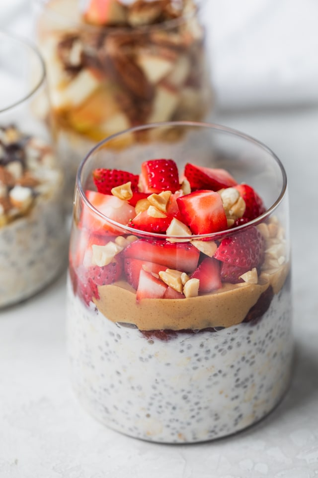

Overnight Oats

Description
This overnight oats recipe is a healthy, quick and simple breakfast that you can make ahead for busy mornings and customize with as many add-ins and toppings as you like!
Ingredients
- Oats
- Milk or plant-based milk alternative
- Chia seeds (optional)
- Greek or vegan yogurt (optional)
- Vanilla extract (optional)
- Sweetner of your choice
- Toppings (fresh or dried fruit, nuts, seeds, cinnamon and other spices)
Steps
- To start, combine oats and chia seeds in a bowl, mason jar, or any sealable container of your choice.
- Add Greek (or vegan yogurt) and vanilla extract.
- Add sweetner of choice (brown sugar, honey, maple syrup).
- Add milk (or vegan alternative) and mix until you see no clumps.
- Seal or cover jar with a lid, and chill in the fridge for at least 2 hours or overnight.
- Next morning, add any fruit toppings, nuts or seeds of your choice and dig in!